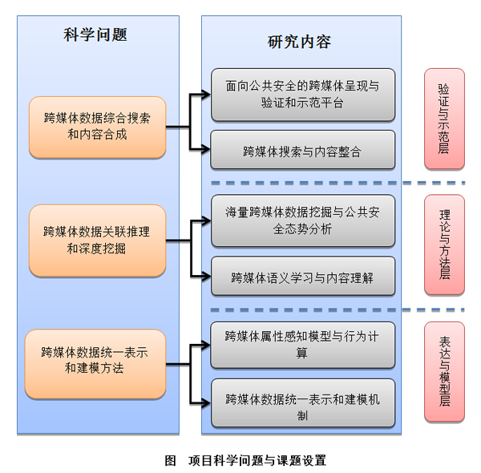

项目简介
网络以其无可比拟的传播速度和表达方式，成为越来越多人表达诉求、宣泄情感和评论时事重要途径。另一方面，网络也会成为虚假信息传播和扩散的平台。与现实生活紧密相关的热点和敏感话题及重大事件往往由网络而引发，进而传输和扩散，对社会公共安全造成重大影响。《国家中长期科学和技术发展规划纲要》中将构建国家公共安全应急信息平台，对突发公共事件防范与快速处置列为优先主题。
有别于传统结构化和非结构化数据，从微博、手机、社交网站和新闻网站等不同渠道获取的不同类型媒体数据及与之相关社会属性信息紧密地混合在一起，反映了个体和群体的社会行为，这一种新的媒体表现形式称为“跨媒体”。本项目面向社会公共安全这一重大需求，对跨媒体数据所隐含的社会属性和特定事件的动态演变进行分析，挖掘和预测挖掘和预测特定社会事件，进而以跨媒体形式对其起源、现状及发展进行全过程呈现，即为“面向公共安全的跨媒体计算”。
本项目凝练三个科学问题：1）跨媒体数据统一表示与建模方法。即在对跨媒体数据自然属性、社会属性及其交互行为的内蕴结构提取基础上，实现关联性语义结构的一致性表达和复杂关系建模；2）跨媒体数据关联推理与深度挖掘。即揭示跨媒体数据涌现、传播和演化机制，建立跨媒体推理模型，挖掘话题、事件和模式之间隐性关联，刻画其迁移和演化机理；3）跨媒体数据综合搜索和内容合成。即建立从一类媒体数据检索另一类媒体数据的综合检索理论和方法，提取热点和敏感话题及重大事件的摘要及代表性语义单元，通过类比和联想等手段合成潜在性热点和敏感话题及重大事件，对其进行多粒度、多视点回溯或预测。
围绕上述三个关键科学问题，本项目设置六个课题：（1）跨媒体数据统一表示和建模机制；（2）跨媒体属性感知模型与行为计算；（3）跨媒体语义学习与内容理解；（4）海量跨媒体数据挖掘与公共安全态势分析；（5）跨媒体搜索与内容整合；（6）面向公共安全的跨媒体呈现与验证和示范平台。
通过六个课题研究，揭示热点和敏感话题与重大事件的网络跨媒体数据涌现、传播和演化机制，发现跨媒体数据与社会行为之间的映射规律，建立多态性跨媒体数据一致性语义结构表示以及跨媒体数据关联和聚合方法，为公共安全事件预测预警等提供理论基础和技术支撑，搭建面向公共安全态势分析与预测预警示范平台。
